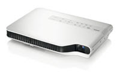

Bett 2010 - What floated my boat?
{kind=link}
Bett is over for another year, do you feel these are the top 5 finds?
{kind=link}
{kind=link}
{kind=link}

5. Development Games package - This interesting use of technology is nothing new but it's fun and easy to adopt, Timocco's new software (although it's not web2) is a way of interacting with PC applications by using your hands.
4. LED projector - Casio - doesn't require a bulb

Ever had the shock of the cost of a replacement bulb for your classroom projector? Most suppliers now supply a 3 year bulb warranty however the LED infused Casio replaces a standard bulb with powerful LED's, capable of 3000 lumens and a reasonable throw (compared to it's competitors). Shame about the price tag, £900+! Tied a close 4th was the Smart Document Camera.

3. IWB projector that doesn't require an IWB (Epson BrightLink 450Wi interactive projector)
Epson showed off their latest short throw projector that doesn't require an IWB (Interactive White Board) for it to have Interactivity. Most schools will probably want a whiteboard anyway but this product decreases cost of ownership by removing the interactivity from the board, we expect that our price on these will be £1600 fully fitted.

2. 3D LCD screen that doesn't require glasses
This is one of those items I have been waiting about 6 months to see in the flesh and I hate to say it that I wasn't bowled over but I was excited! The demo I saw didn't have any decent content on it, I would love to borrow one for a few weeks and watch a load of 3d movies on it to evaluate the difference and to document some practice teaching and learning uses.
And in at 1. Finding out my cousin's son frequently learns and plays on Primary Games Arena. Awesome!

As always, because I'm a moody monkey I had a beef with a few things:
The lack of creativity and research/thought that went into naming edupics.org baffles me, a bad name for a service when there is already a great service called edupics.com doing something similar and for free...... Bee-It disclosed their genius business model.... Charge suppliers for web space. Fail... Google's advertising. . Google, if you are listening. You don't need to advertise, we are already at your mercy. Stop wasting resources.
And some notes/thanks:
Had some great chats with @simfin, @merlinjohn, @ianaddison and many more great people, thanks! There were lots of interactive flash content creators there again this year, I expected that this market would of pushed quite a few out but obviously some are going strong! Sorry I didn't do any evening events this year, I decided on my only evening available to go and see my family which I'm glad I did because we all had a great time :).. I discovered the NEN website has some great resources to offer, you should check them out.. Oh and It's learning is probably my favourite VLE provider as it is inclusive for service providers, unlike pretty much every other VLE...
What I want to see in 2011? And I think I will...
A short throw LED projector that has interactivity built in.
Other peoples thoughts about Bett2010